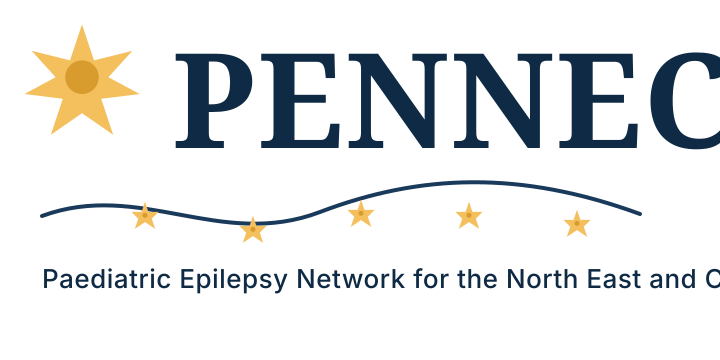

Understanding epilepsy
Plain English information about seizures, epilepsy care, clinics and the support available across the region.

Shared learning, regional collaboration and better epilepsy care for children and young people.
Reliable guidance, links to trusted resources, and information about local epilepsy care.
Practical support for safer, more coordinated care around children and young people.
Meetings, clinical resources, education, service updates and quality improvement work.
Clear, reliable information for children, young people, parents and carers affected by epilepsy.
Plain English information about seizures, epilepsy care, clinics and the support available across the region.
Practical guidance on seizure first aid, safety planning and when families should seek urgent help.
Information about how paediatric epilepsy services work across North East and Cumbria hospitals.
Links to Healthier Together, Epilepsy Action, NICE, RCPCH and other reliable sources of advice.
Support for safer, more coordinated care around children and young people in everyday settings.
Resources for school teams supporting pupils with epilepsy, including care planning and awareness.
Space for regional templates, rescue medication guidance and escalation advice once confirmed.
Information for wider services working with children, young people and families.
A home for education resources, downloads and recommended external learning materials.
A regional platform for shared learning, clinical collaboration, service improvement and professional development.
Biannual meetings, teaching sessions and professional development for clinicians and epilepsy specialist nurses.
Regional service review, Epilepsy12 learning, bundles of care and practical improvement work.
Collaboration with commissioners, charities, non-clinical stakeholders and partner networks.
Placeholder for restricted guidance, meeting papers, presentations and service updates if login is required later.
Hospital and service locations working together across the North East and Cumbria to support children and young people with epilepsy.
PENNEC is part of OPEN UK, the Organisation of Paediatric Epilepsy Networks in the UK.
PENNEC is one of the earliest paediatric epilepsy networks established in the United Kingdom.
The network was established to bring together paediatric neurologists, paediatricians, epilepsy nurses and healthcare professionals involved in the care of children with epilepsy.
The first PENNEC meeting was held in Windermere in 2002, followed by regular biannual meetings across the region.
PENNEC operates under a written constitution and is guided by a working committee including a chair, education and training lead, and treasurer.
The network works with regional services, the Child Health and Wellbeing Network, Healthier Together and national paediatric epilepsy networks.
A place for upcoming PENNEC meetings, education sessions, agendas, minutes and network news.
Future versions can hold agendas, minutes, presentation links, meeting registration details and updates for members.
External guidance and support for families, schools and professionals.
Regional epilepsy advice for children, young people, parents and carers in North East and North Cumbria.
Visit Healthier Together epilepsy adviceInformation and support for parents, carers and families supporting a child with epilepsy.
Visit Epilepsy Action child epilepsy adviceNG217 guidance covering diagnosis and management of epilepsies in children, young people and adults.
Visit NICE epilepsy guidanceA downloadable record for children and young people with epilepsy, including care plans, medicines and key contacts.
Visit RCPCH Epilepsy PassportThe UK organisation connecting regional paediatric epilepsy networks, including PENNEC.
Visit OPEN UKNational clinical audit resources for improving care for children and young people with seizures and epilepsies.
Visit Epilepsy12Parent and carer information about anti-seizure medicines used in childhood epilepsy.
Open medicines for epilepsy leafletA fellow regional paediatric epilepsy network and useful reference point for network structure and professional resources.
Visit EPENUse this section for network enquiries, meeting information and professional collaboration. Urgent clinical concerns should always follow local NHS urgent care routes.